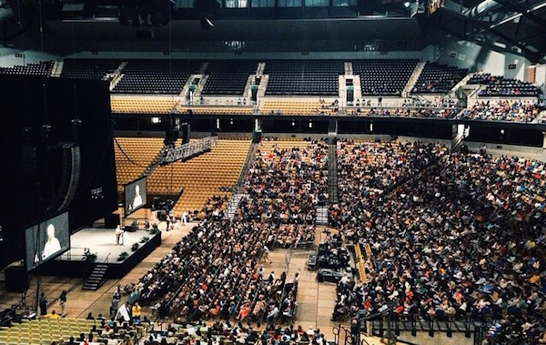

When I stepped foot on the University of Missouri campus in 2012, I never imagined event planning as part of my college career. For three years, I had the pleasure of organizing, marketing and executing seven speaking events as part of the Department of Student Activities Speakers Committee. I spent two of those semesters as an assistant to the committee’s leadership, and the final two semesters leading the committee as Junior Chair and finally Senior Chair.
My biggest accomplishment: Bringing Jane Goodall to MU for a 4,000 seat sold out show in Mizzou Arena.

As a Speakers Committee leader I:
- Brainstormed speaker names and tested the market for receptiveness.
- Worked with speaking agencies such as CAA, Keppler and WMA to negotiate pricing and contracts.
- Booked speakers and managed a $55,000 annual budget.
- Organized and booked transportation, hotel rooms, speaking venues, reception locations, dinner reservations and more for speaking events and speakers.
- Worked with the Student Design Center to brainstorm and create promotional materials. I wrote the event information and speaker biography for each event.
- Coordinated on-campus promotion efforts, including handbills, TV plasma ads, web sliders, sandwich boards, fliers and guerrilla marketing.
- Assisted the Marketing Committee with citywide promotions using Facebook events and promoted posts, radio and TV ads, newspaper ads and more.
- Acted as liaison between speaker and staff upon the talent’s arrival in Columbia. Escorted the talent between scheduled events and managed needs.
- Organized book signings, press conferences and receptions for events.
- Wrote press releases and worked with the MU News Bureau to coordinate media coverage of events.
If you would like to know more about my experience as an event planner, please contact me at laurenrutherford07[at]gmail.com